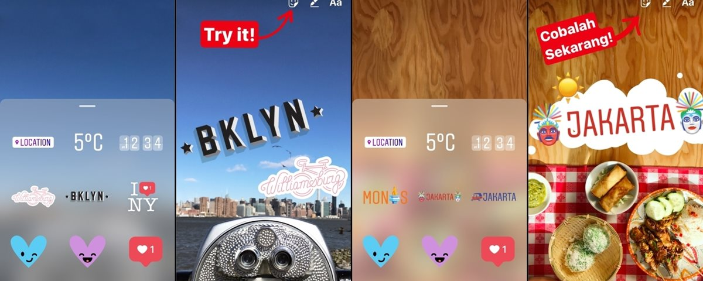

Software da Google detecta câncer com mais precisão que médicos
Postado em 22 fervereiro 2017A Google publicou um artigo científico no qual explica como tem conseguido identificar câncer através de inteligência artificial com mais precisão do que médicos experientes no campo da patologia. A empresa está utilizando uma versão do seu sistema de reconhecimento de imagem inteligente desenvolvido originalmente para o seu projeto de carros autônomos. Uma versão “crua” ou intocada do mesmo sistema usado em carros foi treinada para identificar câncer em imagens de alta resolução do corpo de pacientes e, sem nenhum tipo de personalização, já conseguiu bons resultados. Contudo, uma personalização que fez o software analisar cada pixel de forma ampla e também com zoom reduzido melhorou bastante a performance da máquina. Descubra: Conheça a parceria em busca de avanços na precisão da medicina personalizada. – Patrocinado
Postado por Gabriel MaurilioCuidado, Twitter! Pulse é a nova ferramenta de interação em feed do Twitch
Postado em 22 fervereiro 2017O Twitch, plataforma de streamings e contato entre gamers e fãs, anunciou o Pulse, uma ferramenta que permite a interação da comunidade junto aos conteúdos de diversos serviços em formato de feed, gerado pelos criadores em tempo real. Isso soa parecido com o “microblog” do pássaro azul? Pois bem, a ideia aparenta ser a mesma. Os usuários poderão acompanhar os conteúdos por meio do compartilhamento de links de serviços como Vimeo, YouTube, Twitch, Imgur e Gfycat. Um dos objetivos é atingir também seguidores que não visitam regularmente o canal. Vale notar que o Kodi Box não é vendido no Brasil. Outros media boxes podem ser encontrados dentro de uma faixa entre R$ 150 e R$ 300.
Postado por Gabriel MaurilioFacebook copia Snapchat e traz geostickers ao Instagram
Postado em 22 fervereiro 2017 Se você estava pensando em trocar o Instagram pelo Snapchat justamente pela presença da ferramenta de geostickers, saiba que trazemos boas notícias. Ao que parece, o Facebook gostou tanto dessa função que resolveu copiá-la (o que já não é novidade) e adicioná-la ao Instagram Stories. De acordo com o anúncio oficial da rede social, o sistema de geostickers do app funciona praticamente da mesma maneira que no Snapchat: ao tirar uma foto, você pode colocar um adesivo virtual conforme o lugar onde ela foi feita. Basta clicar no novo ícone que é exibido pela empresa, caso os stickers estejam disponíveis no local. Além disso, os adesivos mudam de acordo com monumentos e outros pontos importantes próximo de onde a pessoa está. Antes que você se anime demais com a novidade, porém, vale avisar que os geostickers do Instagram estão disponíveis apenas nas cidades de Nova York e Jacarta. Mas isso deve mudar eventualmente.
Postado por Gabriel Maurilio